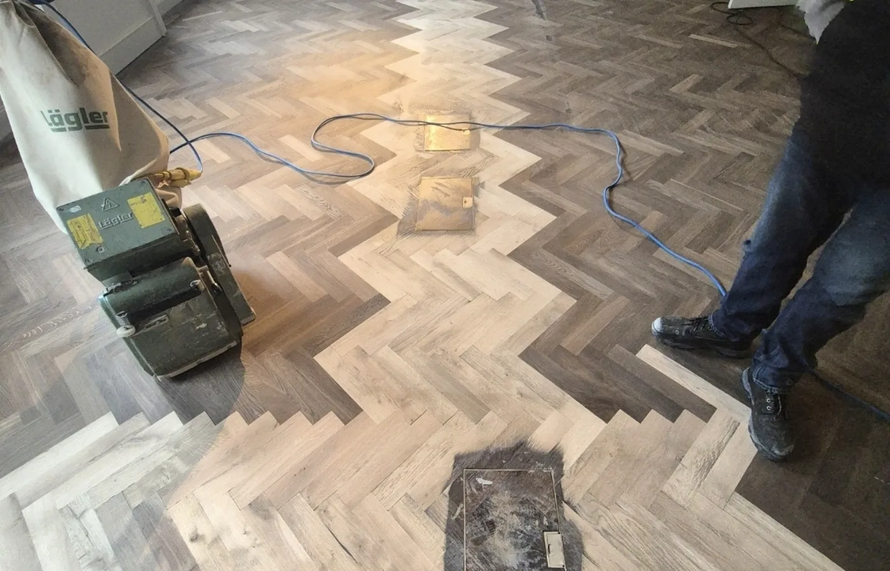

Pine floorboards
We assess board condition and any loose or damaged sections before sanding. Gap filling is recommended only where the construction and movement of the floor make it suitable.
Bring worn wooden floors back to life with dust-controlled sanding, careful repairs and a professional finish. S&K Wood Floor Specialists serves homes and commercial premises in Eastbourne, Polegate, Brighton and the surrounding Sussex area.
Steve & Keir work together on floor sanding and restoration. Steve brings more than 30 years of flooring experience. Based in London and Eastbourne, we assess worn boards, damaged parquet and floors needing a fresh protective finish.
We assess board condition and any loose or damaged sections before sanding. Gap filling is recommended only where the construction and movement of the floor make it suitable.
Solid timber and parquet can often be restored through careful repairs and sanding. We check loose blocks and previous repairs before recommending the finishing system.
Engineered floors need enough usable real-wood wear layer to be sanded safely. Send product details if you have them. Laminate cannot be sanded.
We inspect the timber, previous finish and accessible problem areas. A water-damaged floor needs the leak resolved and its condition assessed before refinishing. Repairs and any unresolved concerns are discussed in your quotation.
Progressive sanding and detailed edge work prepare the floor for the agreed finish. Natural lacquer, oil and suitable colour options can be discussed. We use dust-controlled equipment, though sanding is never completely dust-free.
Tell us about furniture, carpet removal, access and parking. Clear personal items before work starts. We agree any larger furniture arrangements in advance.
Drying and curing depend on the selected product and conditions. We provide guidance for walking on the floor, moving furniture back and cleaning after completion.
See our completed basketweave parquet restoration in Eastbourne alongside other examples of our sanding and refinishing work. Each project includes photographs and details of the work completed.

We retained and repaired the existing parquet hallway before sanding and refinishing it. See the preparation and completed floor photographs.
View the Eastbourne project
Original pine boards were sanded through the correct abrasive sequence and finished to retain a clean, natural timber appearance.
View project
A tired parquet floor was prepared, sanded and refinished to sharpen the pattern and improve the overall appearance.
View projectWe assess pine floorboards, solid wood, parquet and suitable engineered floors in Brighton. Tell us about worn coatings, loose boards or damaged parquet so we can discuss repairs before sanding and finishing.
For flats and properties with shared access, please include the floor level, parking arrangements and any building rules. Send room measurements and photographs for an initial estimate. A viewing may be required before a fixed quotation.
The price depends on area, condition, repairs, finish and access. Send your postcode, room measurements and clear photographs for an initial estimate. A viewing may be needed before we can confirm a fixed quotation.
Yes. We are based in London and Eastbourne and cover floor sanding and restoration projects in Polegate, Brighton and the surrounding Sussex area. Send your property postcode so we can confirm travel, parking and access arrangements.
We assess loose blocks and accessible supporting areas before recommending a repair. The scope depends on what can be inspected and the condition beneath the floor. See our restoration and repairs service.
Yes. We can discuss natural finishes and sheen levels suited to the timber and room. Existing timber colour, old stains and repairs affect the result. Samples can help you choose before full application.
Please send the property postcode, approximate room sizes, floor type if known and your preferred timeframe. Include an overall photograph and close-ups of damage. Our WhatsApp option below lets you send photos directly.
For our full process and suitability guidance, see professional floor sanding and refinishing.
Measurements and clear photographs help us assess suitability and provide a more useful initial estimate. A site visit may still be required before a fixed quotation.